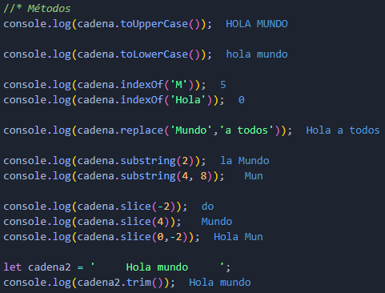
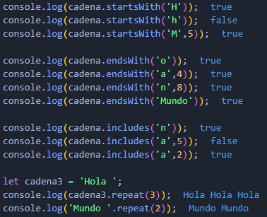
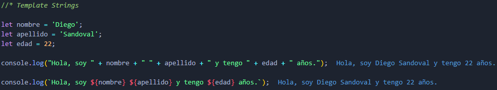

Strings
Métodos y propiedades:
Los métodos son acciones que las cadenas de caracteres pueden hacer. Todos los métodos devuelven una cadena nueva, la cadena original no será modificada. Las propiedades son las características que las cadenas poseen.
Se emplean usando la nomeclatura del punto.
- cadena.método()
- cadena.propiedad
Propiedades:
- length:
- Devuelve la longitud de la cadena.
Métodos:
- toUpperCase():
- Devuleve la cadena a mayúsculas.
- toLowerCase():
- Devuelve la cadena a minúsculas.
- indexOf(string):
- Devuelve la posición en la que se encuentra el string, si no lo encuentra devuelve -1
- replace(valor a buscar, valor nuevo):
- Remplaza el fragmento de la cadena que se le indique y pone el valor nuevo.
- substring(inicio, fin):
- Extrae los caracteres desde inicio hasta fin (el final no se incluye). Si no se incluye el fin extrae hasta el final.
- slice(inicio, fin):
- Igual que substring pero admite valores negativos, si hay valores negativos empezará desde atrás. Si no se incluye el final extrae hasta el final.
- trim():
- Elimina los espacios al inicio y al final de la cadena.
- startsWith(valor, inicio):
- Sirve para saber si la cadena empieza con ese valor. Devuleve true o false.
- endsWith(valor, longitud):
- Sirve para saber si la cadena termina con ese valor. Devuleve true o false.
- includes(valor, inicio):
- Igual que indexOf pero devuelve true o false.
- repeat(valor):
- Repite el string el número de veces que se le indique.


Template Strings:
Funciona como alternativa para evitar usar concatenaciones entre strings y variables. Se hace utilizando ´´ en lugar de ' ' o " " y usando el simbolo $ junto con {} para las variables.
